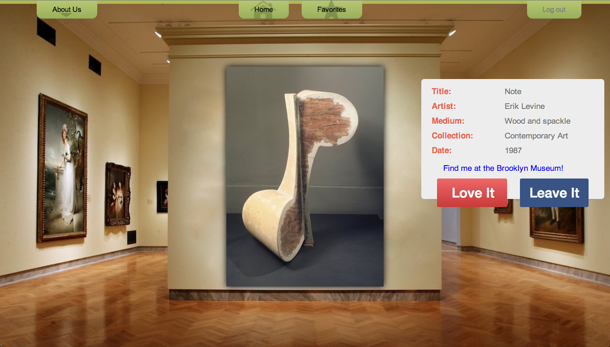
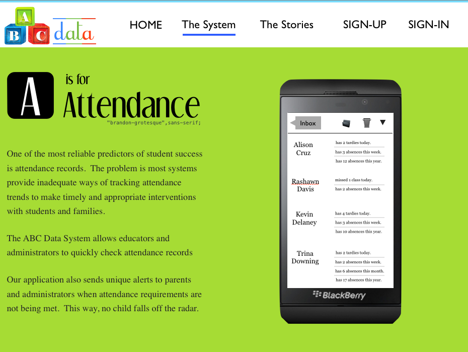

Those that know, do. Those that understand, teach. -Aristotle
design
Wonderfully designed > beautifully designed.
Any day. -Daniel Burka
</develop>
Technical skill is mastery of complexity, while creativity is mastery of simplicity. -Christopher Zeeman
I'M A
CODER
&
EDUCATOR
Hi, I'm Tricia Douglas.
I'm a web-designer and front-end developer living and working in NYC.
As a math teacher, I developed a passion for building technology based tools to enhance the teaching and learning experience.
About Me
My Journal
Contact Me
Art @t Random
Brooklyn Museum artwork randomizer
While takin a web-development course, the assignment was to use an application programming interface (API) to build a unique rails application. We used the Brooklyn Museum's API to pull in over 200,000 unique pieces of artwork at random.
When users logs in, they may explore a seemingly endless collection of museum artifacts and store them for later use.
Many thanks to the helpful folks at the Brooklyn Museum for allowing us access to their pieces so that we may use technology to share them with the world.
"Web design is art wrapped in technology." - James Weaver

ABC Data
Delivering Student Data that Matters
Research shows a handful of factors that determine student success including how much time students spend in the classroom and how they conduct themselves while in the classroom. However, observational data such as these prove to be the hardest to track and make timely interventions on.
The ABC Data system offers a flexible and intuitive way to record and track sensitive performance-based data that is difficult to capture, critical to student success, and too important to leave to chance.

Rich Kid, Poor Kid
Academic Performance Trends in Wealthy vs Poor School Districts
We know that socioeconomic status does not determine the academic performance level of a student just as standin in a dark alley does not ensure that you'll be mugged.
The correlation, however, is clear and by comparing NYC Department of Education's state test records over time, we'll see just how deep these disparities run.